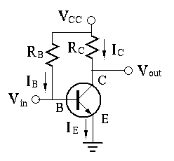

Next: AC Signal Amplification Up: ch4 Previous: Bipolar Junction Transistor (BJT)
Previously we only considered the relationship between the voltage and current at both the input and output ports of a transistor in either CB or CE configuration. Now we need to further find these voltages and currents when the transistor is connected to the rest components of a transistor circuit. Specifically, we treat the transistor as the load of a voltage source and a resistor, and find voltage and current at both the input and output ports.
Example: In the CE circuit shown below,
 ,
,
, . The load line can be determined by two
points:
and
.
Find output voltage
when the input voltage
,
,
, . The load line can be determined by two
points:
and
.
Find output voltage
when the input voltage  takes the
following values:
takes the
following values:
 |
 |
||
|
|||
 |
|
(21) |
 .
,
, and
.
.
,
, and
.
This result is unreasonable and incorrect, because  is so high
that the transistor is no longer in the linear region as in the previous
case, but it is in the saturation region, where the linear relationship
is so high
that the transistor is no longer in the linear region as in the previous
case, but it is in the saturation region, where the linear relationship
 is no longer applicable, and the actual voltage
is no longer applicable, and the actual voltage  can
be approximated to be about
, and the actual
can
be approximated to be about
, and the actual  can be found
to be
.
can be found
to be
.
In general, when analyzing a transistor circuit we can first find
, assuming this linear relationship holds. However,
this assumption is invalid if exceeds the maximum current (the
short-circuit current)
, or the corresponding is
too low ().
Summarizing the above, we see that the operation of a transistor can be in one of the three possible regions:
When , or even negative, , the output current is , , i.e., the transistor (between collector and emitter) is cut off (immediate above the horizontal axis of the output plot).
When
, but is small enough so that the
transistor is in the linear range where the collector current
is proportional to base current ,
and
. The CE transistor circuit in the linear
region is widely used for amplification.
When  is further increased and is also significantly
increased (due to the exponential relationship between and ),
, the linear relationship
no longer
holds as approaches its maximum
. The transistor is
is saturated and
, independent of (to the
immediate right of the vertical axis of the output plot).
is further increased and is also significantly
increased (due to the exponential relationship between and ),
, the linear relationship
no longer
holds as approaches its maximum
. The transistor is
is saturated and
, independent of (to the
immediate right of the vertical axis of the output plot).
A typical CE circuit is shown in the figure below, where , , and .

The DC steady-state operating condition of the CE transistor circuit,
in terms of the currents and voltages and of the input
port, and and of the output port, is called the
DC operating point (Q-point), which iss determined by
 and
and  (as a non-ideal voltage soource represented
by the linear load line);
(as a non-ideal voltage soource represented
by the linear load line);